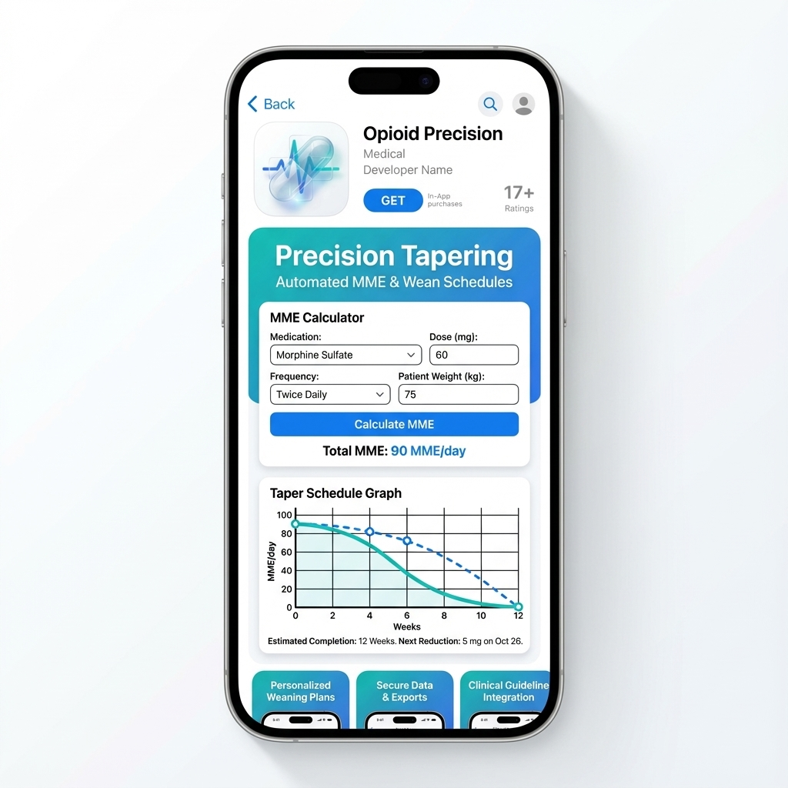

Built for the Bedside
Three distinct modes tailored to specific clinical workflows, creating a complete safety ecosystem.
Risk Engine
Safety First
Prevent adverse events before they happen with standardized assessments like PRODIGY and COWS, integrated directly into your workflow.

Compassion
Opioid Use Disorder
Evidence-based tools including O.A.R.S. counseling guides, buprenorphine induction pathways, and visual communication aids.

Pharmacology
Precision Calculator
Automate complex safe weans. Calculate daily MME instantly with non-linear adjustments for methodone and cross-tolerance.